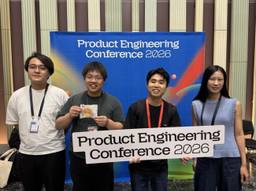

freee Developers Hub
https://developers.freee.co.jp/
フリー株式会社の開発者（エンジニア, デザイナー,プロダクトマネージャー, etc...）によるブログです
フィード

Go 初心者の新卒がGo Conference 2026に初参加してきました！ 1
1
freee Developers Hub
こんにちは、freee でエージェント開発をしている、新卒入社の朝活大好き mornin です！ 2026/9/11 に東京・中野セントラルパークカンファレンスで開催された Go Conference 2026 に参加してきました。freee はシルバースポンサーとして協賛しました。 Go は入社してから書き始めたのでまだ初心者で、Go Conference も今回が初参加です。分からない話ばかりだったらどうしよう……と思いながら会場に向かいました。 この記事では、そんな自分が特に気になったセッションを2つ紹介します。 Go Conference 2026 に参加した freee のメンバー …
2日前

Product Engineering Conference 2026に参加してきました！ 1
freee Developers Hub
こんにちは、エンジニアのWaTTsonです。2026年9月5日(土)に開催されたProduct Engineering Conference 2026に参加してきたのでその様子をレポートします。 Product Engineering Conferenceは、個別の言語とか技術にフォーカスしたものではなく、「プロダクトとしての価値」を生み出すエンジニアリングという部分にフォーカスを置いた、他にはあまり見ないコンセプトのカンファレンスでした。freeeとしては、今回はおやつスポンサーとしてチーズタルトを提供しています。 カンファレンス本編はHall A〜Cの3トラック構成で、プロダクトエンジニア…
2日前

新卒がいきなり登壇！？freee「技術の日」紹介記事
freee Developers Hub
freee 技術の日 2026のイベントキービジュアル 自己紹介 CTO室 タイガーチーム choku 2026年新卒入社。7月に タイガーチーム へ配属され、最近まで freee顧問先管理 AIエージェント の開発に携わっていました。 2026年新卒入社の同期がfreee「技術の日」に登壇します！ 10月3日（土）に開催される freee「技術の日」には、なんと2026年新卒の同期が2人登壇します！ どちらのセッションも、入社1年目で配属されたばかりのメンバーがAIを使ったプロダクト開発の最前線で試行錯誤してきた話です。見どころを先取りして紹介します！ 「GTMエンジニアって何するの？」新卒…
2日前

SPAを丸ごと差し替えながら、画面単位で新基盤へ引っ越した話
freee Developers Hub
こんにちは。freee販売のエンジニアをやっているshuchanです。 この記事では、数年かけて育ってきたReact製の画面を、止めずに、かつ機能追加を続けながら、新しいフロントエンド基盤へ引っ越している話を紹介します。 フレームワークのバージョンアップではなく、「ディレクトリ構成・router・データフェッチ・スタイリング・テスト基盤をまとめて別物に差し替える」という、ほぼフルリメイク的な移行です。 なお、記事中のリポジトリ名・ディレクトリ名は、わかりやすさを優先して汎用的な名前（旧FE / 新FE）に置き換えています。規模に関する数値も丸めています。 TL;DR 新旧フロントエンドの共存構…
8日前
10/3 (土)「freee 技術の日 2026」開催！
freee Developers Hub
freee で DevRel を担当している yopi (@M68Mp) です! 今年も freee 主催のテックカンファレンス「freee 技術の日 2026」を 2026/10/3 (土) にフリー株式会社本社と YouTube Live でハイブリッドで開催します🎉 「freee 技術の日 2026」のキービジュアル 「freee 技術の日」とは 「freee 技術の日」は、2023年から開催している freee のテックカンファレンスで、今年で4度目の開催を迎えます。昨年はオフライン・オンライン合わせて1,000人を超える方にご参加登録いただきました。Developers 同士が技術や…
24日前
セキュリティ・キャンプ2026全国大会 専門B1「プロダクトセキュリティの理想と現実」講義を担当しました。
freee Developers Hub
こんにちは！セキュリティ部のkaworuです。先日開催された、セキュリティ・キャンプ2026全国大会にて、専門B プロダクトセキュリティクラスの講義をセキュリティ部のeiji, yamane, kaworu の3名で担当しました。 私たちが担当したのは、2026年8月11日(火・祝) のB1講義「プロダクトセキュリティの理想と現実」。 技術や知識の説明だけでなく、後に続くB2 ~ B6講義への導入や動機づけという役割もある講義です。 この記事では、講義で取り扱った内容や、講義準備の背景を紹介します。 当日の講義の様子はこのような感じでした。 フリー株式会社の越智郁氏、杉浦英史、山根将司氏による…
1ヶ月前
Black Hat／DEF CONで体験した、AIセキュリティの現在地
freee Developers Hub
セキュリティチームのhikaeです。普段はAIセキュリティを中心に開発者に寄り添うセキュリティをやっています。8/3~8/10に開催された2つの海外カンファレンスの参加レポートを書きました。 1. Black Hat／DEF CONとは？ 2. セッション紹介：「AI Safety Theater: What the RAISE Act Regulates, and What It Does Not」 RAISE Actとは RAISE Actを3プロセスで評価する コロラド州版RAISE Actからみるポリシー設計の考え方 AI規制はどこに向かっているのか 3. Business Hallか…
1ヶ月前
【AI-Lab】低コストLLMの限界を超える手法提案 強化学習の力
freee Developers Hub
コストを抑えつつ性能を高める、LLMを活用した新しい手法が登場。freeeのAIラボが挑む、マルチターン対話での課題解決策を詳しく解説。
1ヶ月前
関西Ruby会議09に参加しました 〜 Google Apps Script で Ruby を動かす
freee Developers Hub
こんにちは。関西拠点で、freee販売の開発をしております、bucyou (ぶちょー) にございます。 2026年7月18日に開催された、関西Ruby会議09 の話をします。聞いたトークでは、nori さんの、「torikago - Ruby::Boxで照らすモジュラモノリスの実行境界」に感銘を受けました。ドメイン間の制約をどのように与えていくか? という問題は日常の業務でも、非常に苦しみ・悩むポイントではあったので、先立って Ruby::Box でそれを解決して、照らそうとしているところが素晴らしいと思ったのでした。 さて、この記事自体は私が Lightning Talk で披露した「Goo…
1ヶ月前
AI agentを活用した開発プロセスと人間の認知限界
freee Developers Hub
AI agentを使った開発が日常的になり、モデルの性能向上や自動化の仕組みの構築などによって、開発のスピードが上がってきています。あるいは、現時点ではまだ目立った向上が見えていないところでも、近い将来に開発スピードが加速していく未来は、多少見えてきていると言って良いでしょう。 では、この開発スピードの向上は、AIやその周辺システムの進化が進めば、どこまででも際限なく加速することができるものでしょうか？私はこれはNOだと思っていて、どこかで「人間の認知能力」による限界が来るのではないかと思っています。この記事では、認知科学の知見などを参照しつつ、AI agentを活用した開発プロセスにおいて認…
1ヶ月前
2026/3/11 データマネジメント2026─AI Ready Dataに舵を切れ─ 「AI Readyの正体はデータマネジメントだ メダリオン2.0の最前線」
freee Developers Hub
2026/3/11に開催された「データマネジメント2026─AI Ready Dataに舵を切れ─」にて、CDO(Chief Data Officer)の城谷 信一郎が登壇した際の資料です。 speakerdeck.com
1ヶ月前
2026/7/30〜7/31 Google Cloud Next Tokyo 26 「freee が目指す データ マネジメント戦略 AI-Ready 時代を支える 攻めのガバナンスとは」
freee Developers Hub
2026/7/30・31に開催された「Google Cloud Next Tokyo 26」にて、データマネジメントチーム マネージャーの西 朋里、法務部の平石 平とデータエンジニアの亀田量英が登壇した際の資料です。 speakerdeck.com
2ヶ月前
プロダクト開発、AIに丸ごと任せられるのか？Meetup Spec/Issue駆動知見を語り尽くす！Findy Meetup登壇レポート
freee Developers Hub
初めまして！freee人事労務でエンジニアをしている miya-c（みやちゃん）GitHub: @keganokamiです。 2026年7月より、関西拠点にて初のfreee人事労務の開発チームが立ち上がりました。私は現在、その立ち上げメンバーとして関西拠点でコア機能の開発に奮闘しています。 2026年7月28日、株式会社U-NEXT HOLDINGS様の本社で開催された、ファインディ株式会社様主催のMeetup「プロダクト開発、AIに丸ごと任せられるのか？Meetup Spec/Issue駆動知見を語り尽くす！」に参加してきました。 私たちのチームでは直近1年間、AIエージェントを活用した仕様…
2ヶ月前
Scrum Fest Sendai 2026に参加しました！
freee Developers Hub
はじめに こんにちは！freee会社設立でエンジニアインターンをしているkenkenです。7/10(金)、7/11(土)に開催されたScrum Fest Sendai 2026に行ってきたので、参加レポートを書こうと思います！ 初めてカンファレンスに参加したのですが、発表だけでなく、他の会社の社員の方とお話しする機会がありとても充実していました。 スクラムフェスとは？ 簡単にスクラムフェスとは何かについて触れておこうと思います。スクラムフェスとはアジャイル開発やスクラムの実践者、初心者からエキスパートまで多様な人々が集まる大規模なコミュニティの祭典のことを指します。全国で開催されており、ほとん…
2ヶ月前
なぜ一エンジニアがPHPカンファレンスにコミットするのか 〜PHPカンファレンス2026運営レポート〜
freee Developers Hub
こんにちは！フリーナンスのエンジニアをやっているthe よしだです！ 今回は、2026年7月20日（月）に開催された PHPカンファレンス 2026 の運営レポートをお届けします！ PHPカンファレンスは、誰でも気軽に参加できるよう「無料開催」にこだわり、初学者から経験豊富なベテランまで、幅広いエンジニアが集い・繋がる日本最大級のPHPイベントです。 なぜPHPカンファレンスにコミットし続けるのか？ 実は、私がPHPカンファレンスの運営スタッフを務めるのは今年で4年目になります。 「なぜ4年もコミットし続けているのか？」 改めてその原動力を振り返ってみると、「これまで先人たちのアウトプットに助…
2ヶ月前
スクラムフェス金沢2026の参加報告とその後の変化
freee Developers Hub
こんにちは、エンジニアの miyachi です。 先日……といっても開催からだいぶ時間が経ってしまったのですが、石川県金沢市で開催された スクラムフェス金沢 に参加してきました。時間が経ってしまった分、このブログでは当日起きたことだけではなく、セッションで得た学びがその後の自分の日常にどう根付いたのか、という参加後の変化も含めて書きます。 freeeから参加した3人での集合写真 スクラムフェス金沢とは 公式サイトの文面をそのまま引用します。 スクラムフェス金沢2026はアジャイルコミュニティの祭典です。 金沢にアジャイル開発・スクラムの実践者、これから実践しようとしている人たちが集い、対話し、…
2ヶ月前
多層防御 vs 最先端のサプライチェーン攻撃 ―― freee の大規模障害訓練の舞台裏
freee Developers Hub
こんにちは、北海道から freee red team*1に参加している yu です。 読者の皆さんは、freee の全社障害訓練というものをご存知でしょうか。 私自身、4年前の転職の際は障害訓練の記事を見て freee に興味を持つきっかけになったり、入社直後の2022年の障害訓練では手も足も出ず歯痒い思いをしたりと、大変思い入れの深いイベントです。 developers.freee.co.jp 一方で、ここ数年で急速に拡大を続けるこの組織において全社障害訓練を行うハードルは高くなり、思うように実施できない状況が続いていました。 「じゃあ、多少スコープを絞ってでも自分たちでやれば良いのではない…
2ヶ月前
MySQLのスロークエリを調査して、APIのレスポンスタイムを5分から20秒に改善した話
freee Developers Hub
こんにちは。freee請求書エンジニアのshunです。 24卒未経験でfreeeに入社し、freee請求書プロダクトの開発を行っています。 この記事では、先日行ったAPIのスロークエリの改善について紹介します。 APIのエンドポイントで発生していた約5分のスロークエリを、原因調査からMySQLオプティマイザの挙動の読み解きまで行い、20秒まで短縮しました。 「SQL単体では正しそうなのに実行計画が壊れる」「オプティマイザが期待と違うインデックスを選んでしまう」というのは、地味ですがよく遭遇するテーマだと思います。最近はMCP経由でAIエージェントがAPIを叩くようにもなってきており、APIのパ…
2ヶ月前
「視座を上げる」に悩むあなたへ。語れる主語を増やして「視点」を得るヒント
freee Developers Hub
こんにちは、 freee の権限管理基盤チームでマネージャーをしていた sentokun と申します。 突然ですが、リーダーやマネージャーなど、新たな役割になった際に何をしたらいいか悩んでいる方はいませんか？ オーナーシップを持ってほしいと言われ、自分なりに頑張っているが何かしらのギャップを感じる。視座を上げるという話をよくされるが、ピンとこない。そんな心当たりはありませんか？私はそうでした。 こういった話題を取り扱った記事は世の中にたくさん出ていますが、思わぬ話が自分に刺さったりします。 ということで、私の考える「視座を上げる」ことについて、実体験を交えつつお伝えできればと思います。 1. …
3ヶ月前
Authorization Design as a User Story：権限設計を通して学ぶ、業務フローとユーザーストーリーのポイント
freee Developers Hub
1. はじめに こんにちは、権限管理基盤チームで PdM をしている sentokun と申します。 私は基盤チームの立場でよくプロダクトチームから権限設計に関する相談を受けるのですが、実際にやっている内容に立ち返ると、それは業務フローとユーザーストーリーの整理に通じると感じています。 この記事では、権限設計という複雑そうなタスクの「よくあるパターン」を通して、業務フローとユーザーストーリーの重要性について共有します。 TL;DR 権限設計を考える際には、以下の2ステップが必要です。 業務フローとユーザーストーリーを整理する（2章） 「誰が、どんな立場で、何をするか」を具体化する 3つの深掘り…
3ヶ月前
freee請求書 33,000 行の openapi.yml を TypeSpec に移行した話
freee Developers Hub
債権・請求書ドメインでエンジニアをやっている jaxx です。 好きな ESP32 デバイスは M5Stack ATOMS3 Lite です。 freee請求書では、Public API だけでなく、内部的なAPIも含めると複数あり、最も多いAPI群は、生成後のOpenAPIが 33,000行ありましたが、今回 API 定義のソースを OpenAPI (YAML) から TypeSpec へ全面的に移行しました。 今回はその話を備忘録としてエントリーにしたいと思います。 なぜ既存の技術スタックを変更するのか freee請求書はスキーマ駆動開発を採用していて、OpenAPI を起点にバックエンド…
3ヶ月前
RubyKaigi 2026 でfreee Drink upを開催しました!
freee Developers Hub
はじめに こんにちは！freee人事労務のエンジニアのkaseです。 RubyKaigi 2026が函館にて開催されました。 参加された方はいかがでしたか？私は初参加だったのですが、興味のある講演を聞きつつ、ハセガワストアのやきとり弁当やラッキーピエロといったローカルフードを満喫でき、大変満足でした!(少し食べすぎました) freeeは、GoldスポンサーとDrinkupスポンサーとして参加しており、三日目の夜にDrinkupを開催しました。 今回はその模様をレポートします! SweeeもDrinkupの参加者をお出迎え Drinkup当日の様子 Drinkupは、PREMIER HOTEL …
3ヶ月前
Coding Agentの時代: ソフトウェアエンジニアの未来
freee Developers Hub
AIが主役となる時代、エンジニアの役割はどのように変わるのか？coding Agent技術を用いた業務改善の実践例として、freeeのバックオフィスチームの取り組みと、BPRやFDEを通じた戦略を紐解きます。
3ヶ月前
TSKaigi 2026 に登壇者 & 運営スタッフとして参加してきました！
freee Developers Hub
freee でエンジニア兼 Dev Branding をやっているけむりだま (@_kemuridama) です. TSKaigi では 2024 年の初回の開催から運営に参加し, 昨年からコアスタッフとして企画や運営にも携わっています. 2026/5/22-23 で東京の羽田で開催された TSKaigi 2026 で外部のカンファレンスへの初登壇を行ったので, 登壇者と運営の両輪で走り抜けた話を振り返っていこうかなと思います. TSKaigi 2026 に参加した freee のメンバー 登壇者として Day 1 に 「密結合なバックエンドから TypeScript のコードを生成する」 と…
4ヶ月前
Laravel Live Japan に参加してきました！
freee Developers Hub
こんにちは！フリーナンスのエンジニアをやっているthe よしだです！ 今回は2026年5月26日(火)・27日(水)に立川ステージガーデンで開催された Laravel Live Japan についてお話したいと思います！ Laravel は PHP の人気フレームワークの一つで、Ruby における Ruby on Rails のような立ち位置になりますが、日本で Laravel を題材にしたカンファレンスは、2019年に開催された Laravel JP Conference が最後となり、7年間開催されていませんでした。 今回、Laravel コアチームエンジニアである Ryuta Hamas…
4ヶ月前
Claude Enterprise を全社に安全に展開するために、SCIM × IaC で権限運用を整備した話
freee Developers Hub
こんにちは！最近 デスクセットアップ が趣味である freee AI Platform Engineering チームの JaeSoon です。 ゴールデンウィークに合わせて、リビングと作業部屋のレイアウトをまるごと組み直しました。 あれこれ動かしているうちに気づけば連休が終わっていましたが、毎日座る場所だけに作業のコンディションが目に見えて変わって、満足しています 🪑✨ 新しく整えたデスク/部屋全景 私がもともと所属していた「AI駆動開発（AI-Driven Development）チーム」 は、社内のプロダクト開発組織における AI 活用を定着させる仕事をしてきました。 その結果、free…
4ヶ月前
freee の Agile Security を支える Security Champions
freee Developers Hub
こんにちは、北海道から freee red team*1に参加している yu です。 北海道は春らしい暖かい日が続き、雪も溶け、私は冬に家の前で落としたスマートリングをようやく見つけることができました。北国での冬の落とし物は往々にして春を待たなければならないことがあります。 さて、そんなことよりも今日は2022年に始まった freee Security Champions*2 のこれまでの歴史と、今なお進化し続けるこの制度についてご紹介します。 Security Champions Program の開始（2022年） 2022 年に私が freee へ入社した頃、当時の PSIRT（Prod…
5ヶ月前
スクリーンリーダーに触れてみるワークショップを「freee 技術の日 2025」で開催しました
freee Developers Hub
デザイナーだったりコードを書いていたりアクセシビリティまわりのことをやっていたりする id:ymrl です。すっかり半年も前になってしまいましたが、昨年11月30日に開催した「freee 技術の日 2025」で、スクリーンリーダーに触れてみる「アクセシビリティワークショップ」を開催しました。その紹介をしたいと思います。 なぜアクセシビリティワークショップをやるのか アクセシビリティというのは、「製品やサービスにアクセスできる利用状況の度合い」というふうに表現されます。障害のある人や高齢の人、何らかの不便や不自由がある人でも、なるべく問題なくアクセスできる製品やサービスであることは、freeeの…
5ヶ月前
大規模Railsアプリを支える「バックエンド委員会」とRuby YJIT導入によるパフォーマンス改善
freee Developers Hub
こんにちは！フリー株式会社でエンジニアをしているyassyとkenzaです。 2026年1月30日に開催された「freee Tech Night」にて、「freee会計の大規模開発を支える "バックエンド委員会"」というテーマで登壇しました。 www.youtube.com freeeの基幹プロダクトである「freee会計」は、リリースから14年が経過した国内でも有数の大規模Ruby on Railsアプリケーションです。本記事では、この巨大なプロダクトをいかにして健全に保ち、進化させ続けているのか、その中核を担う「バックエンド委員会」の活動と、直近で取り組んだYJIT導入の詳細について解説し…
5ヶ月前
GitHub Copilotにソースコードを学習されないために対応したこと
freee Developers Hub
GitHubが大好きなセキュリティチームのhikaeです。GitHubは先日、GitHub Copilot Free / Pro / Pro+ の入出力などを、オプトアウトしない限りAIモデルの学習に利用する方針変更を発表しました。適用は2026年4月24日を予定しています。Copilot Business / Enterprise の利用者はこの変更の対象外ですが、本当に安心なのでしょうか？ 「自社の開発者が必ずBusiness / Enterpriseライセンスの経路で使っている」と言い切れるかという観点から、意図せず学習に使われる経路をどう塞ぐかについて実装方法を整理し、その実装方法を整…
5ヶ月前